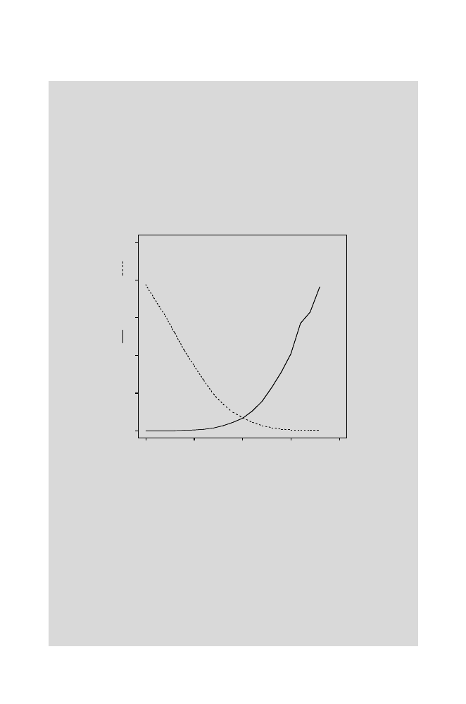

258
9 Signals in DNA
for(i in 1:19){
false.neg[i]<-length(gata.motifs.score[gata.motifs.score[]
<cutoffs[i]])/N}
false.pos<-rep(0,19)
#Vector to hold calculated values
for(i in 1:19){
false.pos[i]<-length(back.sim.score[back.sim.score[]
>cutoffs[i]])/N}
> plot(cutoffs,false.neg,type="l",xlim=c(-10,10), ylim=c(0,1))
> points(cutoffs,false.pos,type="l",lty=2)
Fraction false-negative ( ) or false-positive ( )
0.0 0.2 0.4 0.6 0.8 1.0
Cutoff Score
-10 -5 0 5 10
Fig. 9.9.
False negative errors (fraction of simulated GATA-1 sites identified as
“background”: solid line) and false positive errors (fraction of simulated “back-
ground” sequences identified as GATA-1 sites: broken line) for simulated motifs
and background sequences as a function of cutoff score. The histogram of scores is
shown in Fig. 9.8.
The plot in Fig. 9.9 shows the expected opposite behavior of the false
positive and false negative error rates. If we were to choose a cutoff score of
0.0, we would have a false negative rate of 6.6% and a false positive error rate
of 6.8%. This latter value is deadly for scanning long sequences. For example,
if we were to examine 100,000 base pairs upstream of a particular gene, we
would incorrectly predict approximately 6800 GATA-1 sites (assuming that
human DNA is adequately represented by the iid model).